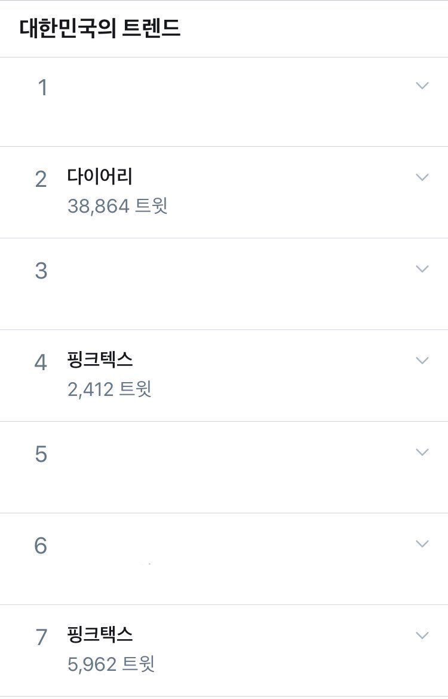

다이어리 꾸미기(일명 ‘다꾸’)가 코르셋 혹은 핑크택스인지에 대한 물음으로부터 점화된 플로우. 2020년 4월 25일 해당 플로우의 주요 키워드 다이어리·핑크택스는 총 4만6천여 트윗으로 한국 트위터 실시간 트렌드에 오르며 논쟁이 되었다.
|  |
| 2020년 4월 25일 저녁 한국트위터 실시간트렌드 캡처. |
“저런 논리면 안네의 일기도 코르셋”, “다꾸가 코르셋이면 난중일기는 코르셋 끝판왕”, “코란도 코르셋인가 봄”,“난 논문에 스티커 쓰니까 논꾸 중ㅎ”과 같은 트윗들이 1만~몇천 리트윗을 받으며 많은 이들의 지지를 받았다. 주장과 관련없이 이러한 트윗과 이를 지지하는 분위기들은 공론장에서의 건강한 비판이 아니라 조롱에 속한다.1